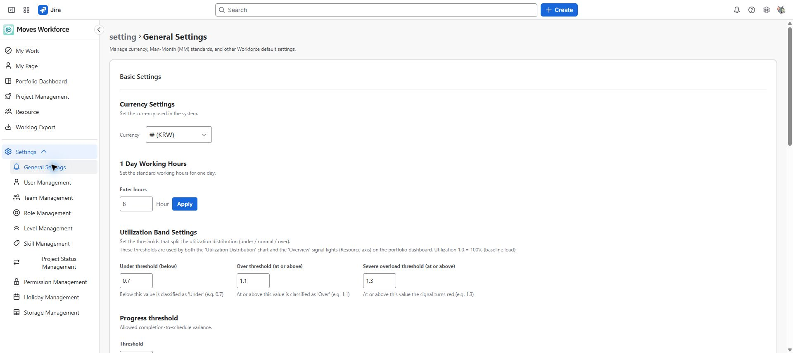

검토 초안: 2026-10-04 지정된 staging의 영어 화면을 촬영했습니다. 화면 이미지는 한·영 가이드가 공통으로 사용합니다. 배포 버전과 역할별 접근·저장 동작은 아직 검증 중입니다.
조직의 근무 기준과 급여 정책, 역할·등급·스킬·상태·휴일을 설정합니다. 이 값은 여러 사용자의 계산과 선택지에 함께 영향을 줍니다.
일반 설정 읽기로 조회하고 쓰기로 변경합니다. 변경 전에 현재 값과 영향을 받는 보고서를 확인합니다.
| 항목 | 확인할 내용 |
|---|---|
| 통화 | 조직의 금액 표기 기준 |
| 1일 근무시간 | MD 환산과 목표 시간의 기준 |
| 가동률 경계 | 과소·과부하 상태를 구분하는 조직 기준 |
| 진척 임계값 | 완성 진척과 일정 진척 차이의 허용 범위 |
| 급여 정책 | 인원별 금액 또는 등급 기준 금액 |
| 문서 설정 | 연결 문서의 분류·필수 분류·오래됨 판정 기준 |

일반 설정의 통화, 1일 근무시간과 가동률 경계.
일반 설정의 등급 기반·인원별 급여 정책 선택 영역.
등급 기반 정책으로 바꿔도 저장된 개인 금액을 삭제하는 것은 아닙니다. 되돌렸을 때 필요한 개인 금액이 모두 준비돼 있는지도 확인합니다. 프로젝트에 직접 입력한 예산은 별도입니다.
| 화면 | 관리 대상 | 주의할 점 |
|---|---|---|
| 역할 | 직무 | 인력과 프로젝트 역할의 선택지 |
| 등급 | 인력 수준과 급여 밴드 | 하한·상한 순서 및 유효한 대표값 확인 |
| 스킬 | 보유·필요 스킬 사전 | 같은 뜻의 중복 항목을 줄여 적합도 비교에 사용 |
| 프로젝트 상태 | 칸반 컬럼과 이동 흐름 | 기존 프로젝트가 사용하는 상태와 허용 전이를 확인 |
| 휴일 | 공휴일과 근무 비율 | 연도·날짜·반휴 등 계산에 반영할 기준 확인 |
각 화면은 해당 기준정보의 읽기·쓰기 권한을 따릅니다. 등급 금액 등 민감 항목의 노출은 별도 정책을 확인합니다. 삭제 전 사용 중인 항목인지 확인하고, 거부 사유가 표시되면 참조를 먼저 정리합니다.
저장공간 관리 권한이 있으면 사용 현황을 확인합니다. 실제 정리나 복구는 화면의 대상과 영향 범위를 확인한 뒤 제품 운영 담당자와 진행합니다. 프로젝트·사용자 데이터 삭제는 각 관리 화면의 별도 작업이며 저장공간 현황 조회로 데이터가 삭제되지는 않습니다.
지표가 달라졌다면 설정 변경 시각, 적용 정책, 집계 시각을 함께 확인합니다. 화면에 값을 저장했다는 사실만으로 모든 보고서가 즉시 같은 시점으로 갱신된다고 가정하지 않습니다.
경로: Settings → General Settings. 기본 설정·급여 정책·문서 설정은 각각의 카드에서 따로 저장합니다. 다른 카드의 미저장 입력까지 함께 저장된다고 가정하지 마세요.
| 버튼·입력 항목 | 기능·사용 조건·변경 대상 | 결과 확인과 문제 대응 |
|---|---|---|
| 통화 | 금액을 표시할 조직 통화를 선택합니다. 환율을 적용해 이미 저장한 금액을 자동 환전하는 기능으로 사용하지 않습니다. | 예산·급여·밴드의 입력 단위를 맞춘 뒤 기본 설정 카드에서 저장합니다. |
| 1일 근무시간·적용·저장 | Apply는 입력 시간을 정리하고 로컬 선택값에 반영합니다. 입력은 0.5시간 단위로 정리되며 실제 영구 저장은 기본 설정 카드의 Save입니다. | 입력값·표시값을 확인하고 저장 후 다시 열어 기준을 확인합니다. MD·목표 시간·가용량 계산이 달라질 수 있습니다. |
| 가동률 부족·과부하·심한 과부하 경계 | 비율 단위입니다. 1.0=100%, 예시 0.7·1.1·1.3은 70%·110%·130%입니다. 포트폴리오 분포와 자원 신호 판정에 사용됩니다. | 조직 기준과 경계 순서를 확인하고 저장합니다. 임계값 변경은 실제 기록 시간 변경이 아닙니다. |
| 진척 허용 차이 | 0~100 범위의 퍼센트포인트(%p)입니다. 완료 진척과 일정 진척의 차이에 적용하며 빈 값은 유효한 0으로 처리되지 않습니다. | 예를 들어 5는 5%p 기준입니다. 검증 오류를 고친 뒤 저장하고 진척 판정을 확인합니다. |
| 급여 정책 선택·저장·변경 확인 | 인원별은 개인 연봉·투입 금액, 등급 기반은 대표 연간 밴드 금액을 사용합니다. 선택 후 Save와 확인 창의 Change로 정책을 바꿉니다. | 전환 전 사용할 레벨과 적용 금액을 정합니다. 인원별 정책에서는 밴드 입력란이 숨겨지므로 처음 설정할 때는 등급 기반으로 전환한 뒤 레벨 금액을 입력하고 비용·미산정 표시를 확인합니다. 기존 밴드의 재사용 여부도 점검합니다. 저장된 개인 값은 삭제되지 않지만 등급 기반에서는 표시·편집이 제한됩니다. |
| 등급 설정 이동·미산정 안내 | 밴드가 없는 레벨을 확인하고 레벨 관리로 이동합니다. 등급 기반에서 금액 기준이 없으면 원가가 0으로 계산될 수 있습니다. | 0을 무료 인력으로 해석하지 않습니다. 정책 전환 후 프로젝트 비용과 포트폴리오의 갱신 시각도 확인합니다. |
| 문서 분류 추가·이름·필수·삭제 | 분류는 최대 30개, 이름은 최대 30자이며 중복 이름은 허용되지 않습니다. 필수 분류가 없는 프로젝트는 문서 관리의 누락 표시 대상입니다. | 분류 제거는 Confluence 페이지 삭제가 아닙니다. 기존 분류 연결과 표시를 확인하고 문서 설정 카드에서 저장합니다. |
| 오래된 문서 기준일·문서 저장 | 1~3650일 범위의 기준으로 마지막 수정일을 판정합니다. 문서 설정 저장은 분류와 기준일을 함께 저장합니다. | 너무 많은 분류·중복·잘못된 이름·기준일 오류는 해당 입력을 수정합니다. 최신 메타데이터 확인 실패와 오래됨을 구분합니다. |
| 기존 이슈 패널 표시 보완 실행 | 기존 연결 이슈의 패널 표시용 정보를 보완하는 관리 동작입니다. 일반 사용자에게 새 프로젝트나 워크로그를 만드는 기능이 아닙니다. | 쓰기 권한으로 실행하고 처리 상태·실패 수를 확인합니다. 실행 접수와 전체 처리 완료를 구분합니다. |
| 저장공간 사용량·프로젝트·테이블 목록 | 저장공간 모니터링에서 사용량과 데이터 분포를 조회합니다. 현재 조회 화면을 일반 데이터 초기화 버튼으로 사용하지 않습니다. | 프로젝트 삭제 등은 해당 업무 화면의 별도 확인 절차를 따릅니다. 운영 정리는 제품 운영 담당자와 대상 범위를 확인합니다. |